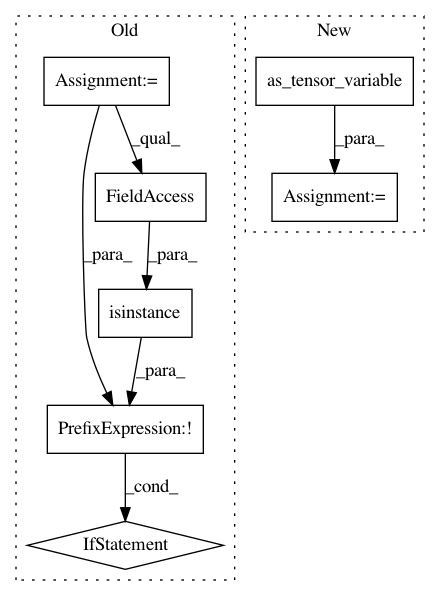

ab0283366b30e1697850a1c006764d466b97afc0,theano/tensor/nnet/bn.py,AbstractBatchNormTrain,make_node,#AbstractBatchNormTrain#Any#Any#Any#Any#Any#Any#Any#,413
Before Change
assert (running_var is None or running_var.ndim == x.ndim)
if not isinstance(epsilon, theano.Variable):
epsilon = as_tensor_variable(epsilon)
if not isinstance(running_average_factor, theano.Variable):
running_average_factor = as_tensor_variable(running_average_factor)
inputs = [x, scale, bias, epsilon, running_average_factor]
output_types = [x.type(), scale.type(), scale.type()]
if running_mean is not None and running_var is not None:
inputs.append(running_mean)
After Change
def make_node(self, x, scale, bias, epsilon=1e-4,
running_average_factor=0.1,
running_mean=None, running_var=None):
x = as_tensor_variable(x)
scale = as_tensor_variable(scale)
bias = as_tensor_variable(bias)
epsilon = as_tensor_variable(epsilon)
running_average_factor = as_tensor_variable(running_average_factor)
In pattern: SUPERPATTERN
Frequency: 3
Non-data size: 7
Instances
Project Name: Theano/Theano
Commit Name: ab0283366b30e1697850a1c006764d466b97afc0
Time: 2017-02-03
Author: nouiz@nouiz.org
File Name: theano/tensor/nnet/bn.py
Class Name: AbstractBatchNormTrain
Method Name: make_node
Project Name: Theano/Theano
Commit Name: ab0283366b30e1697850a1c006764d466b97afc0
Time: 2017-02-03
Author: nouiz@nouiz.org
File Name: theano/tensor/nnet/bn.py
Class Name: AbstractBatchNormTrainGrad
Method Name: make_node
Project Name: Theano/Theano
Commit Name: ab0283366b30e1697850a1c006764d466b97afc0
Time: 2017-02-03
Author: nouiz@nouiz.org
File Name: theano/tensor/nnet/bn.py
Class Name: AbstractBatchNormInference
Method Name: make_node